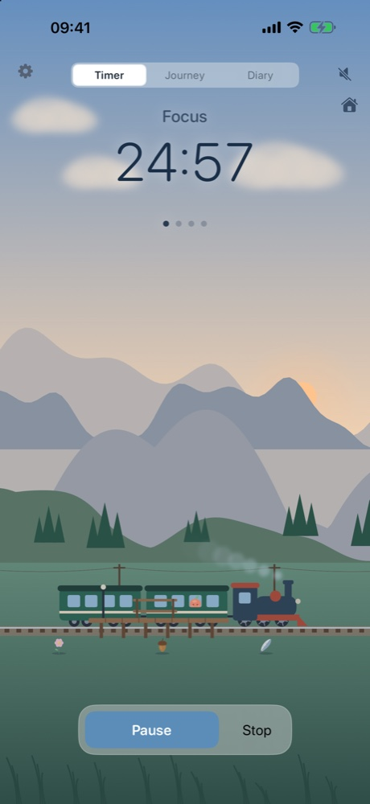
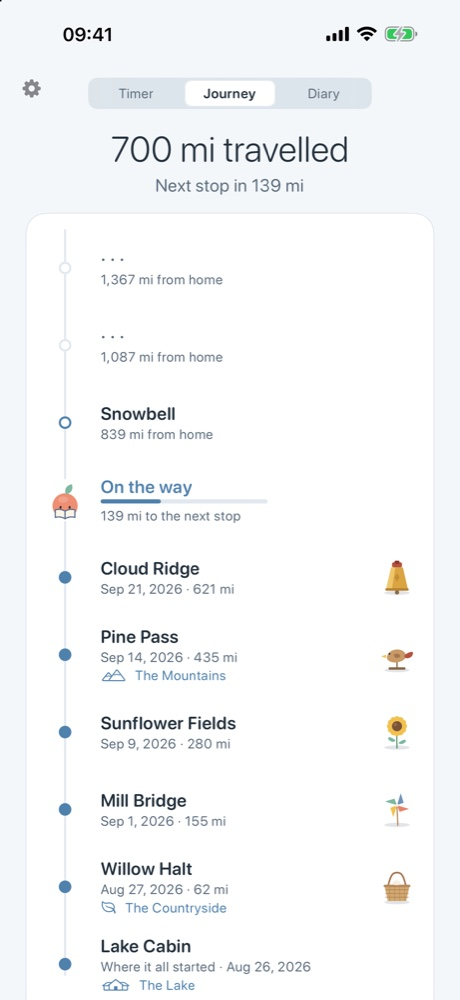
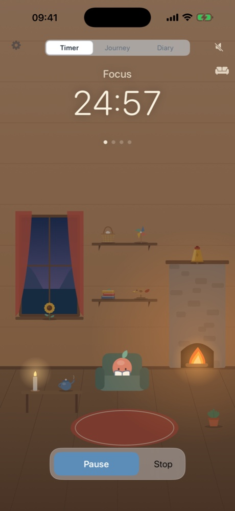
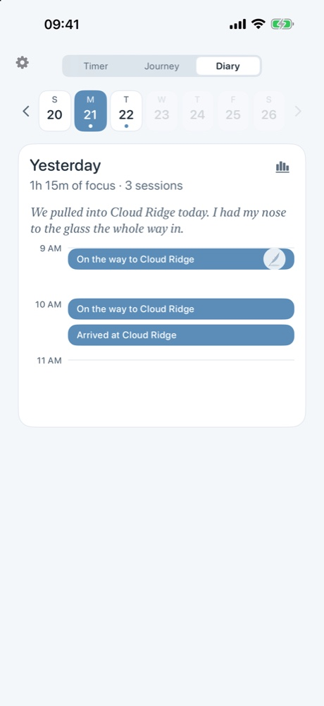
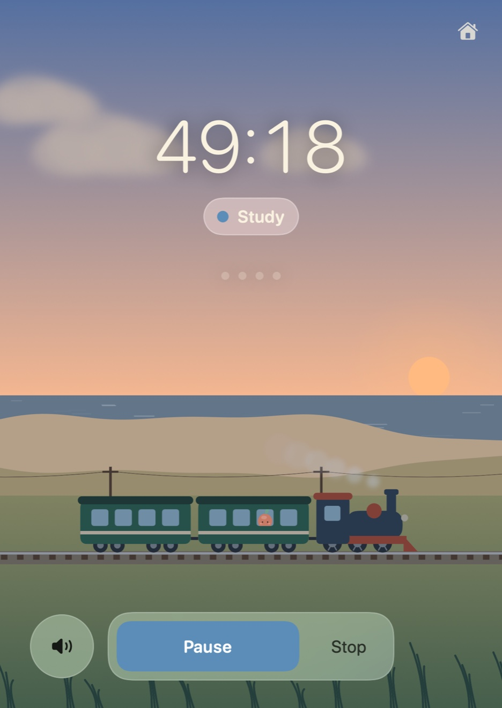
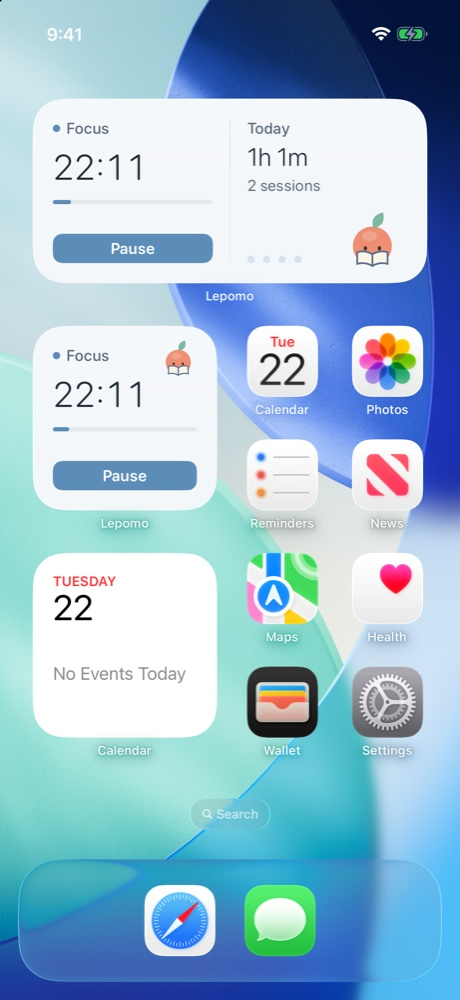
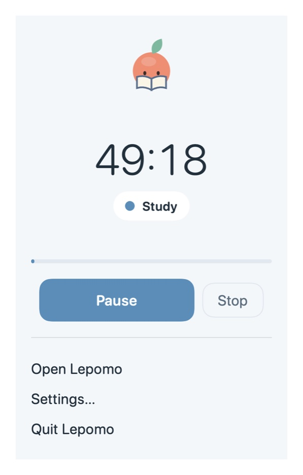

The timer
One clear timer, a living scene.
Focus, short break, long break. Pause and resume without losing your place. The sky follows your time of day, it rains now and then, and the ambient sound is made for concentration: the lake, a breeze, crickets after dark, the fire indoors.

The journey
Every minute moves the train.
Each minute of focus is a kilometre. Stations arrive, each with a postcard and a souvenir. Small keepsakes turn up along the way. Take a week off and the train simply waits: no streaks, no guilt, nothing decays.

The cabin
A cabin of your own.
Home is a cabin by the lake, with a fire, an armchair and shelves for what the journey brings back. Furnish it with your souvenirs, add a few decorations, change its look.

The diary
A diary, not a scoreboard.
Each day on its own page: when you focused, where the train was going, what it found, and a line in Lepomo's own hand about the most interesting thing he saw that day. The numbers are there for whoever wants them, one tap away.
Always within reach
A glance away.
On the Mac it lives in the menu bar, with desktop widgets. On the iPhone: a Live Activity on the Lock Screen and in the Dynamic Island, Home and Lock Screen widgets. Shortcuts on both. Your history and preferences follow you between devices through your own iCloud.



Private by design
Nothing leaves your devices.
No account, no analytics, no tracking. Your history stays on your iPhone and Mac and, if you use iCloud, in your own private iCloud, where we cannot see it. The timer works entirely offline.
Available for iPhone and Mac.